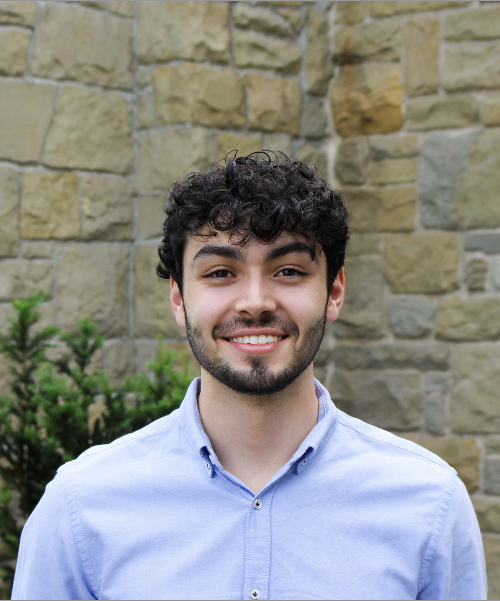

What I’m working on
I helped develop FlexOLMo, and now apply related ideas in federated learning setups to train on privacy-sensitive cancer data across institutions through the Cancer AI Alliance.
Previously, I worked at TrueMedia with Oren Etzioni on deepfake detection systems intended to help safeguard the 2024 U.S. election.
I earned my BS/MS in Computer Science at the University of Washington, where I worked with Akari Asai in the H2Lab under Hannaneh Hajishirzi.
Current interests: adaptive LLMs, continual learning, flexible and modular models, and agents.
Selected Papers
The Tug-of-War Between Deepfake Generation and Detection
Read paperDeepfake-Eval-2024: A Multi-Modal In-the-Wild Benchmark of Deepfakes Circulated in 2024
Read paperOutside Work
Outside of work, I like playing and watching soccer, traveling, and carrot cake .